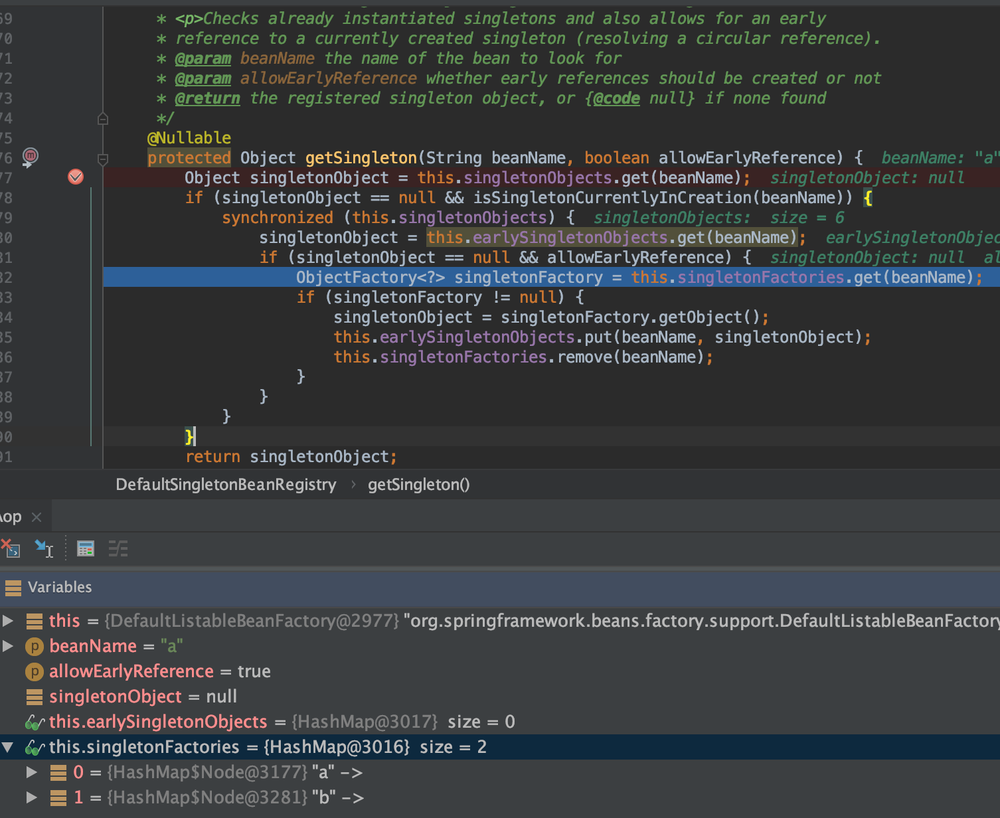
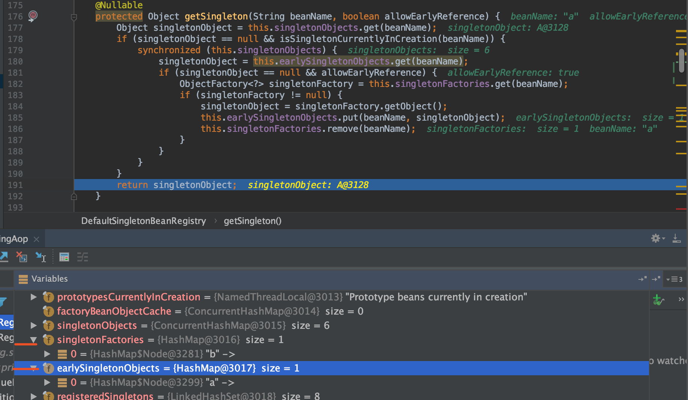
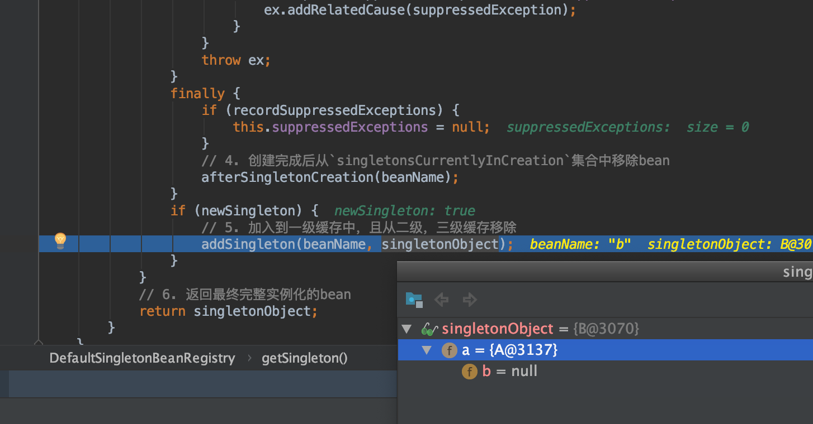
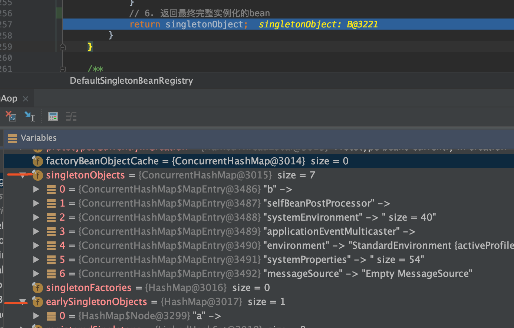
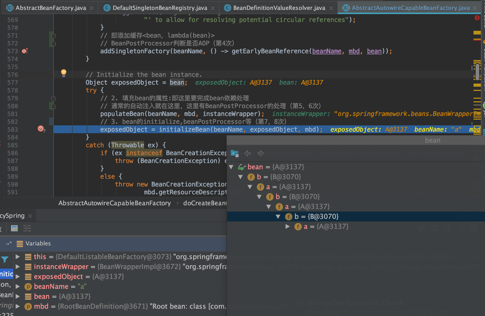

TreeviewCopyright @doctording all right reserved, powered by aleen42
循环依赖
什么是依赖？
- eg1
A -> B
B -> A
- eg2
A -> B -> C -> A
Spring中循环依赖场景
- 构造器的循环依赖(spring无法解决)
- field属性的循环依赖(spring能解决单例bean的属性循环依赖,且要是setter注入方式)
singleton bean 属性循环依赖无问题
单例Bean循环依赖理解图

三级缓存涉及要点说明
public class DefaultSingletonBeanRegistry extends SimpleAliasRegistry implements SingletonBeanRegistry {
...
// 从上至下 分表代表这“三级缓存”
//一级缓存，也就单例池
private final Map<String, Object> singletonObjects = new ConcurrentHashMap<>(256);
// 二级缓存，早起暴露对象，存放原始的 bean 对象（尚未填充属性）
private final Map<String, Object> earlySingletonObjects = new HashMap<>(16);
// 三级缓存，Map<bean,lambda(bean)>，存放 beanFactory 对象，用于解决循环依赖
private final Map<String, ObjectFactory<?>> singletonFactories = new HashMap<>(16);
...
/** Names of beans that are currently in creation. */
// 这个缓存也十分重要：它表示bean创建过程中
// 它在Bean开始创建时存入，创建完成后会将其移出
private final Set<String> singletonsCurrentlyInCreation = Collections.newSetFromMap(new ConcurrentHashMap<>(16));
/** Names of beans that have already been created at least once. */
// 当这个Bean被创建完成后，会标记为这个 注意：这里是set集合 不会重复
// 至少被创建了一次的 都会放进这里
private final Set<String> alreadyCreated = Collections.newSetFromMap(new ConcurrentHashMap<>(256));
- 其中
isSingletonCurrentlyInCreation()方法判断当前单例Bean是否正在创建中（在创建中的Bean是没有初始化完全的）
/**
* Return whether the specified singleton bean is currently in creation
* (within the entire factory).
* @param beanName the name of the bean
*/
public boolean isSingletonCurrentlyInCreation(String beanName) {
return this.singletonsCurrentlyInCreation.contains(beanName);
}
单例的三级缓存getSingleton方法
/**
* Return the (raw) singleton object registered under the given name.
* <p>Checks already instantiated singletons and also allows for an early
* reference to a currently created singleton (resolving a circular reference).
* @param beanName the name of the bean to look for
* @param allowEarlyReference whether early references should be created or not
* @return the registered singleton object, or {@code null} if none found
*/
@Nullable
protected Object getSingleton(String beanName, boolean allowEarlyReference) {
Object singletonObject = this.singletonObjects.get(beanName);
if (singletonObject == null && isSingletonCurrentlyInCreation(beanName)) {
synchronized (this.singletonObjects) {
singletonObject = this.earlySingletonObjects.get(beanName);
if (singletonObject == null && allowEarlyReference) {
ObjectFactory<?> singletonFactory = this.singletonFactories.get(beanName);
if (singletonFactory != null) {
singletonObject = singletonFactory.getObject();
this.earlySingletonObjects.put(beanName, singletonObject);
this.singletonFactories.remove(beanName);
}
}
}
}
return singletonObject;
}
- 从一级缓存中取，有则返回
- a. bean是在创建中，b. 早期暴露对象有(即二级缓存有)，有则返回
- a. 允许循环依赖，三级缓存有，则获取并加入到二级缓存，且从三级缓存移除掉
AbstractBeanFactory类的doGetBean方法
// Create bean instance.
if (mbd.isSingleton()) {
sharedInstance = getSingleton(beanName, () -> {
try {
return createBean(beanName, mbd, args);
}
catch (BeansException ex) {
// Explicitly remove instance from singleton cache: It might have been put there
// eagerly by the creation process, to allow for circular reference resolution.
// Also remove any beans that received a temporary reference to the bean.
destroySingleton(beanName);
throw ex;
}
});
bean = getObjectForBeanInstance(sharedInstance, name, beanName, mbd);
}
也是getSingleton方法，有个lambda表达式的createBean方法
获取单例bean：DefaultSingletonBeanRegistry类的getSingleton方法主体逻辑
/**
* Return the (raw) singleton object registered under the given name,
* creating and registering a new one if none registered yet.
* @param beanName the name of the bean
* @param singletonFactory the ObjectFactory to lazily create the singleton
* with, if necessary
* @return the registered singleton object
*/
public Object getSingleton(String beanName, ObjectFactory<?> singletonFactory) {
Assert.notNull(beanName, "Bean name must not be null");
synchronized (this.singletonObjects) {
// 1. 先判断是否在一级缓存中
Object singletonObject = this.singletonObjects.get(beanName);
if (singletonObject == null) {
if (this.singletonsCurrentlyInDestruction) {
throw new BeanCreationNotAllowedException(beanName,
"Singleton bean creation not allowed while singletons of this factory are in destruction " +
"(Do not request a bean from a BeanFactory in a destroy method implementation!)");
}
if (logger.isDebugEnabled()) {
logger.debug("Creating shared instance of singleton bean '" + beanName + "'");
}
// 2. 创建前加入到`singletonsCurrentlyInCreation`集合中, 表示正在创建中（
// 因为单例池没有，则必须要去创建的
beforeSingletonCreation(beanName);
boolean newSingleton = false;
boolean recordSuppressedExceptions = (this.suppressedExceptions == null);
if (recordSuppressedExceptions) {
this.suppressedExceptions = new LinkedHashSet<>();
}
try {
// 3. 执行lambda表达式的创建逻辑获取到单例bean，即执行`doCreateBean`
singletonObject = singletonFactory.getObject();
newSingleton = true;
}
catch (IllegalStateException ex) {
// Has the singleton object implicitly appeared in the meantime ->
// if yes, proceed with it since the exception indicates that state.
singletonObject = this.singletonObjects.get(beanName);
if (singletonObject == null) {
throw ex;
}
}
catch (BeanCreationException ex) {
if (recordSuppressedExceptions) {
for (Exception suppressedException : this.suppressedExceptions) {
ex.addRelatedCause(suppressedException);
}
}
throw ex;
}
finally {
if (recordSuppressedExceptions) {
this.suppressedExceptions = null;
}
// 4. 创建完成后从`singletonsCurrentlyInCreation`集合中移除
// 即遇到创建异常 或者 创建完成，都是非创建中状态
afterSingletonCreation(beanName);
}
if (newSingleton) {
// 5. 加入到一级缓存中，且从二级，三级缓存移除
addSingleton(beanName, singletonObject);
}
}
// 6. 返回最终完整实例化的bean
return singletonObject;
}
}
AbstractAutowireCapableBeanFactory类的doCreateBean方法
/**
* Actually create the specified bean. Pre-creation processing has already happened
* at this point, e.g. checking {@code postProcessBeforeInstantiation} callbacks.
* <p>Differentiates between default bean instantiation, use of a
* factory method, and autowiring a constructor.
* @param beanName the name of the bean
* @param mbd the merged bean definition for the bean
* @param args explicit arguments to use for constructor or factory method invocation
* @return a new instance of the bean
* @throws BeanCreationException if the bean could not be created
* @see #instantiateBean
* @see #instantiateUsingFactoryMethod
* @see #autowireConstructor
*/
protected Object doCreateBean(final String beanName, final RootBeanDefinition mbd, final @Nullable Object[] args)
throws BeanCreationException {
// Instantiate the bean.
BeanWrapper instanceWrapper = null;
if (mbd.isSingleton()) {
instanceWrapper = this.factoryBeanInstanceCache.remove(beanName);
}
if (instanceWrapper == null) {
// 1. factoryBeanInstanceCache 没有则需要主动创建
instanceWrapper = createBeanInstance(beanName, mbd, args);
}
final Object bean = instanceWrapper.getWrappedInstance();
Class<?> beanType = instanceWrapper.getWrappedClass();
if (beanType != NullBean.class) {
mbd.resolvedTargetType = beanType;
}
// Allow post-processors to modify the merged bean definition.
synchronized (mbd.postProcessingLock) {
if (!mbd.postProcessed) {
try {
applyMergedBeanDefinitionPostProcessors(mbd, beanType, beanName);
}
catch (Throwable ex) {
throw new BeanCreationException(mbd.getResourceDescription(), beanName,
"Post-processing of merged bean definition failed", ex);
}
mbd.postProcessed = true;
}
}
// 加入到三级缓存: 即添加<bean，lambda(bean)>
// Eagerly cache singletons to be able to resolve circular references
// even when triggered by lifecycle interfaces like BeanFactoryAware.
boolean earlySingletonExposure = (mbd.isSingleton() && this.allowCircularReferences &&
isSingletonCurrentlyInCreation(beanName));
if (earlySingletonExposure) {
if (logger.isTraceEnabled()) {
logger.trace("Eagerly caching bean '" + beanName +
"' to allow for resolving potential circular references");
}
addSingletonFactory(beanName, () -> getEarlyBeanReference(beanName, mbd, bean));
}
// Initialize the bean instance.
Object exposedObject = bean;
try {
// 2. 填充bean的属性:即这里要完成bean依赖处理
populateBean(beanName, mbd, instanceWrapper);
// 3. bean的initialize, beanPostProcessor等
exposedObject = initializeBean(beanName, exposedObject, mbd);
}
catch (Throwable ex) {
if (ex instanceof BeanCreationException && beanName.equals(((BeanCreationException) ex).getBeanName())) {
throw (BeanCreationException) ex;
}
else {
throw new BeanCreationException(
mbd.getResourceDescription(), beanName, "Initialization of bean failed", ex);
}
}
if (earlySingletonExposure) {
// 获取到AOP之后的代理对象
Object earlySingletonReference = getSingleton(beanName, false);
if (earlySingletonReference != null) {
// 如果提前暴露的对象和经过了完整的生命周期后的对象相等，那么把代理对象赋值给`exposedObject`
if (exposedObject == bean) {
exposedObject = earlySingletonReference;
}
// 如果提前暴露的对象和经过了完整的生命周期后的对象不相等
// allowRawInjectionDespiteWrapping 表示在循环依赖时
else if (!this.allowRawInjectionDespiteWrapping && hasDependentBean(beanName)) {
String[] dependentBeans = getDependentBeans(beanName);
Set<String> actualDependentBeans = new LinkedHashSet<>(dependentBeans.length);
for (String dependentBean : dependentBeans) {
if (!removeSingletonIfCreatedForTypeCheckOnly(dependentBean)) {
actualDependentBeans.add(dependentBean);
}
}
if (!actualDependentBeans.isEmpty()) {
throw new BeanCurrentlyInCreationException(beanName,
"Bean with name '" + beanName + "' has been injected into other beans [" +
StringUtils.collectionToCommaDelimitedString(actualDependentBeans) +
"] in its raw version as part of a circular reference, but has eventually been " +
"wrapped. This means that said other beans do not use the final version of the " +
"bean. This is often the result of over-eager type matching - consider using " +
"'getBeanNamesOfType' with the 'allowEagerInit' flag turned off, for example.");
}
}
}
}
// Register bean as disposable.
try {
registerDisposableBeanIfNecessary(beanName, bean, mbd);
}
catch (BeanDefinitionValidationException ex) {
throw new BeanCreationException(
mbd.getResourceDescription(), beanName, "Invalid destruction signature", ex);
}
return exposedObject;
}
- org.springframework.beans.factory.support.BeanDefinitionValueResolver.resolveReference
/**
* Resolve a reference to another bean in the factory.
*/
@Nullable
private Object resolveReference(Object argName, RuntimeBeanReference ref) {
try {
Object bean;
String refName = ref.getBeanName();
refName = String.valueOf(doEvaluate(refName));
if (ref.isToParent()) {
if (this.beanFactory.getParentBeanFactory() == null) {
throw new BeanCreationException(
this.beanDefinition.getResourceDescription(), this.beanName,
"Can't resolve reference to bean '" + refName +
"' in parent factory: no parent factory available");
}
bean = this.beanFactory.getParentBeanFactory().getBean(refName);
}
else {
bean = this.beanFactory.getBean(refName);
this.beanFactory.registerDependentBean(refName, this.beanName);
}
if (bean instanceof NullBean) {
bean = null;
}
return bean;
}
catch (BeansException ex) {
throw new BeanCreationException(
this.beanDefinition.getResourceDescription(), this.beanName,
"Cannot resolve reference to bean '" + ref.getBeanName() + "' while setting " + argName, ex);
}
}
Debug过程中的要点与截图
a依赖b，执行到a的populateBean("b", mbd, instanceWrapper)的时候，发现依赖B，要走getBean("b")的逻辑
- populateBean("b", mbd, instanceWrapper)的时候，发现依赖了A，又要去getBean("a")，这样执行到
getSingleton方法，此时从三级缓存中能取到A

- 从三级缓存取到A之后,执行了
lambda(bean A)的逻辑，删除三级缓存，并将bean A加入二级缓存（根据工厂就能对A进行各种操作，得到最后的A，这里称为早期的曝光对象），然后B的populateBean方法能正常返回

- 由于B拿到了提交曝光的A，这样B就正常的完成A依赖的设置，顺利完成自己的
populateBean方法，进入自己的初始化方法

- 最后B实例化全部完成后，加入到单例缓存池(一级缓存)中


- 由于B实例化的完成；A的
populateBean方法也就能正常完成，并继续自己的初始化，最后完成生命周期；在最后也加入到单例缓存池(一级缓存)中

为什么是三级缓存？
Bean生命周期 A
- class --- BeanDefinition
- new A(); // 原始对象
- populateBean（依赖注入）--> 单例池中找B --> 找不到 --> 创建B
- initializeBean
- BeanPostProcessor
- 完成并添加到单例池中
Bean生命周期 B
- class --- BeanDefinition
- new B(); // 原始对象
- populateBean（依赖注入）--> 单例池中找A --> 找不到 --> 三级缓存中能找到 --> lambda(A) --> 提前得到代理A
- initializeBean
- BeanPostProcessor
- 完成并添加到单例池中
按照如上，如果只有 一级缓存(单例池) 和 三级缓存（工厂lambda生产），能够解决A,B依赖问题，接着又来了个C(且依赖A)；如果按照上面B的逻辑，那么可以发现lambda(A)会再次被执行，这可能导致B，C执行后获取的代理A不一致,如下(C也执行工厂方法得到代理A)
- Bean生命周期 C
- class --- BeanDefinition
- new C(); // 原始对象
- populateBean（依赖注入）--> 单例池中找A --> 找不到 --> 三级缓存中能找到 --> lambda(A) --> 提前得到代理A
- initializeBean
- BeanPostProcessor
- 完成并添加到单例池中
所以再来一个缓存, 将工厂产生的代理对象A也缓存起来，所以最后是三个缓存(且备注了其用途)
- singletonObjects:
单例池：单例对象实例化一次，缓存最后的代理bean成品 - earlySingletonObjects:
map<beanName, 代理bean>：解决性能问题？B,C,D都依赖A,工厂产生是开销的,且是重复的工厂创建，显然可以缓存好，提高性能 - singletonFactories:
map<beanName, lambda(原始对象)>：beanFactory能够任意操作bean，解决循环依赖(提前暴露工厂，产生代理bean，属性注入)
完成populateBean之前，产生工厂，工厂能够产生bean。为什么是工厂？
- 答: 因为populateBean拿到的依赖bean是原始的，显然依赖注入要是最后的代理品，而工厂能够让bean升华这个bean，变成最后的代理类（因为populateBean之后会有代理行为）
参考：bilibili 子路老师
scope bean 循环依赖有问题？
测试代码
@Test
public void testDependencySpringPrototype() {
ApplicationContext applicationContext =
new ClassPathXmlApplicationContext("spring-dependency-prototype.xml");
A a = (A) applicationContext.getBean("a");
B b = (B) applicationContext.getBean("b");
Assert.assertTrue(a != null);
Assert.assertTrue(b != null);
}
- spring-dependency-prototype.xml
<?xml version="1.0" encoding="UTF-8"?>
<beans xmlns="http://www.springframework.org/schema/beans"
xmlns:xsi="http://www.w3.org/2001/XMLSchema-instance"
xsi:schemaLocation="http://www.springframework.org/schema/beans https://www.springframework.org/schema/beans/spring-beans-3.0.xsd">
<bean id="a" class="com.mb.A" scope="singleton">
<property name="b" ref="b"/>
</bean>
<bean id="b" class="com.mb.B" scope="singleton">
<property name="a" ref="a"/>
</bean>
</beans>
异常栈
constructor A()
constructor B()
org.springframework.beans.factory.BeanCreationException: Error creating bean with name 'a' defined in class path resource [spring-dependency-prototype.xml]: Cannot resolve reference to bean 'b' while setting bean property 'b'; nested exception is org.springframework.beans.factory.BeanCreationException: Error creating bean with name 'b' defined in class path resource [spring-dependency-prototype.xml]: Cannot resolve reference to bean 'a' while setting bean property 'a'; nested exception is org.springframework.beans.factory.BeanCurrentlyInCreationException: Error creating bean with name 'a': Requested bean is currently in creation: Is there an unresolvable circular reference?
at org.springframework.beans.factory.support.BeanDefinitionValueResolver.resolveReference(BeanDefinitionValueResolver.java:378)
at org.springframework.beans.factory.support.BeanDefinitionValueResolver.resolveValueIfNecessary(BeanDefinitionValueResolver.java:110)
at org.springframework.beans.factory.support.AbstractAutowireCapableBeanFactory.applyPropertyValues(AbstractAutowireCapableBeanFactory.java:1648)
at org.springframework.beans.factory.support.AbstractAutowireCapableBeanFactory.populateBean(AbstractAutowireCapableBeanFactory.java:1400)
at org.springframework.beans.factory.support.AbstractAutowireCapableBeanFactory.doCreateBean(AbstractAutowireCapableBeanFactory.java:575)
at org.springframework.beans.factory.support.AbstractAutowireCapableBeanFactory.createBean(AbstractAutowireCapableBeanFactory.java:498)
at org.springframework.beans.factory.support.AbstractBeanFactory.doGetBean(AbstractBeanFactory.java:338)
at org.springframework.beans.factory.support.AbstractBeanFactory.getBean(AbstractBeanFactory.java:199)
at org.springframework.context.support.AbstractApplicationContext.getBean(AbstractApplicationContext.java:1094)
at test.com.mb.DependencyTest.testDependencySpringPrototype(DependencyTest.java:44)
at sun.reflect.NativeMethodAccessorImpl.invoke0(Native Method)
at sun.reflect.NativeMethodAccessorImpl.invoke(NativeMethodAccessorImpl.java:62)
at sun.reflect.DelegatingMethodAccessorImpl.invoke(DelegatingMethodAccessorImpl.java:43)
at java.lang.reflect.Method.invoke(Method.java:498)
at org.junit.runners.model.FrameworkMethod$1.runReflectiveCall(FrameworkMethod.java:50)
at org.junit.internal.runners.model.ReflectiveCallable.run(ReflectiveCallable.java:12)
at org.junit.runners.model.FrameworkMethod.invokeExplosively(FrameworkMethod.java:47)
at org.junit.internal.runners.statements.InvokeMethod.evaluate(InvokeMethod.java:17)
at org.junit.runners.ParentRunner.runLeaf(ParentRunner.java:325)
at org.junit.runners.BlockJUnit4ClassRunner.runChild(BlockJUnit4ClassRunner.java:78)
at org.junit.runners.BlockJUnit4ClassRunner.runChild(BlockJUnit4ClassRunner.java:57)
at org.junit.runners.ParentRunner$3.run(ParentRunner.java:290)
at org.junit.runners.ParentRunner$1.schedule(ParentRunner.java:71)
at org.junit.runners.ParentRunner.runChildren(ParentRunner.java:288)
at org.junit.runners.ParentRunner.access$000(ParentRunner.java:58)
at org.junit.runners.ParentRunner$2.evaluate(ParentRunner.java:268)
at org.junit.runners.ParentRunner.run(ParentRunner.java:363)
at org.junit.runner.JUnitCore.run(JUnitCore.java:137)
at com.intellij.junit4.JUnit4IdeaTestRunner.startRunnerWithArgs(JUnit4IdeaTestRunner.java:68)
at com.intellij.rt.execution.junit.IdeaTestRunner$Repeater.startRunnerWithArgs(IdeaTestRunner.java:47)
at com.intellij.rt.execution.junit.JUnitStarter.prepareStreamsAndStart(JUnitStarter.java:242)
at com.intellij.rt.execution.junit.JUnitStarter.main(JUnitStarter.java:70)
Caused by: org.springframework.beans.factory.BeanCreationException: Error creating bean with name 'b' defined in class path resource [spring-dependency-prototype.xml]: Cannot resolve reference to bean 'a' while setting bean property 'a'; nested exception is org.springframework.beans.factory.BeanCurrentlyInCreationException: Error creating bean with name 'a': Requested bean is currently in creation: Is there an unresolvable circular reference?
at org.springframework.beans.factory.support.BeanDefinitionValueResolver.resolveReference(BeanDefinitionValueResolver.java:378)
at org.springframework.beans.factory.support.BeanDefinitionValueResolver.resolveValueIfNecessary(BeanDefinitionValueResolver.java:110)
at org.springframework.beans.factory.support.AbstractAutowireCapableBeanFactory.applyPropertyValues(AbstractAutowireCapableBeanFactory.java:1648)
at org.springframework.beans.factory.support.AbstractAutowireCapableBeanFactory.populateBean(AbstractAutowireCapableBeanFactory.java:1400)
at org.springframework.beans.factory.support.AbstractAutowireCapableBeanFactory.doCreateBean(AbstractAutowireCapableBeanFactory.java:575)
at org.springframework.beans.factory.support.AbstractAutowireCapableBeanFactory.createBean(AbstractAutowireCapableBeanFactory.java:498)
at org.springframework.beans.factory.support.AbstractBeanFactory.doGetBean(AbstractBeanFactory.java:338)
at org.springframework.beans.factory.support.AbstractBeanFactory.getBean(AbstractBeanFactory.java:199)
at org.springframework.beans.factory.support.BeanDefinitionValueResolver.resolveReference(BeanDefinitionValueResolver.java:367)
... 31 more
Caused by: org.springframework.beans.factory.BeanCurrentlyInCreationException: Error creating bean with name 'a': Requested bean is currently in creation: Is there an unresolvable circular reference?
at org.springframework.beans.factory.support.AbstractBeanFactory.doGetBean(AbstractBeanFactory.java:264)
at org.springframework.beans.factory.support.AbstractBeanFactory.getBean(AbstractBeanFactory.java:199)
at org.springframework.beans.factory.support.BeanDefinitionValueResolver.resolveReference(BeanDefinitionValueResolver.java:367)
... 39 more